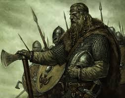
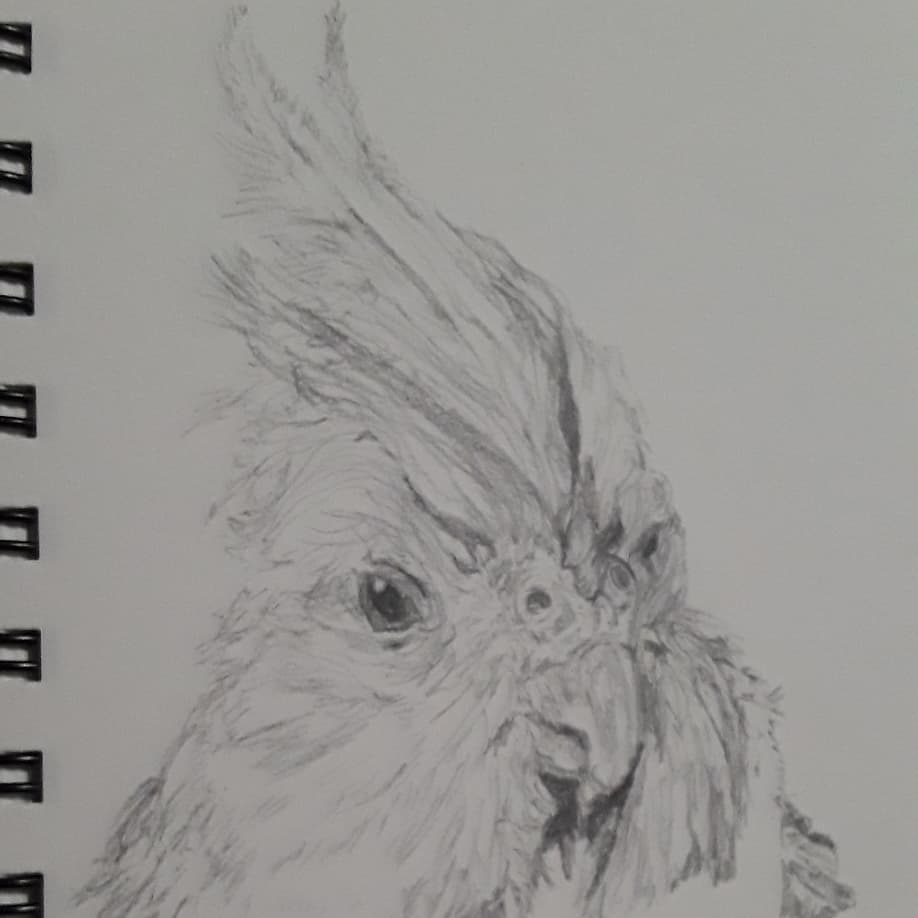
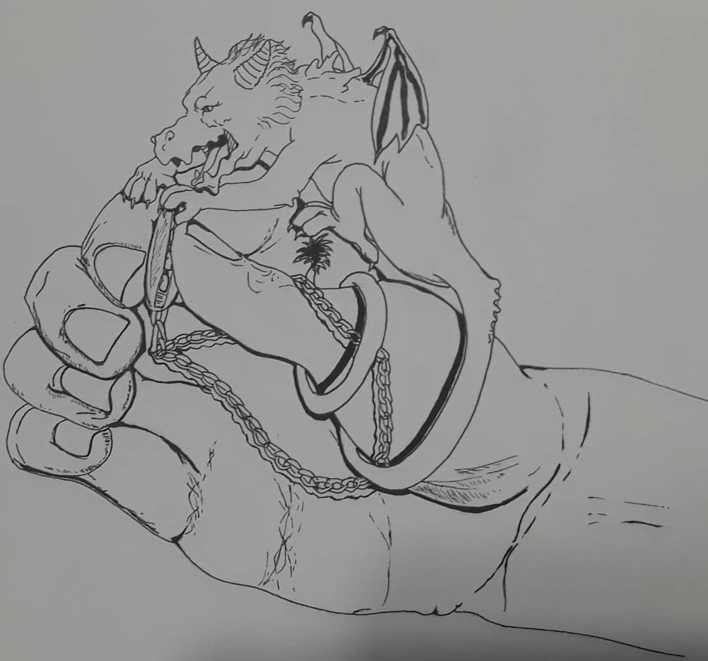

And even if I'm not good at that new thing or I decide perhaps the experience isn't for me, at least I tried!
I've always been fascinated by animals and originally went to school for veterinary medicine, but quickly realized that path wasn't for me. So I sat down and revisted some of my other passions: Computers and art.
I'm currently a UX designer, but I'm slowly learning more and more about software engineering and improving my skills in frontend development.
Outside of that, I have several hobbies and interests, with my main ones being video games, reading, writing, and drawing.
I've been in love with video games since I first played Pokemon Crystal when I was four years old and my love for games has only grown even more. Here are some of my favorite games; can you recognize them based on the screenshots?

Reading, writing and drawing have also been part of my life since a very young age, allowing me to explore and create new worlds while unfortuately stuck in the state of Florida. I'm currently into fantasy novels and therefore, I heavily focus on fantasy settings in both my writing and art. However, that doesn't mean I won't draw non-fantasy subjects. My most used medium is graphite, but I also use charcoal and acrylic in my ventures with traditional art. I also make digital art, including pixel art and animation! Here is some of my art:




The pet tax must always be paid. I hope you enjoy some pics of my little gremlins:

The sock thief, aka Hex.

The steak thief, aka Cashew.